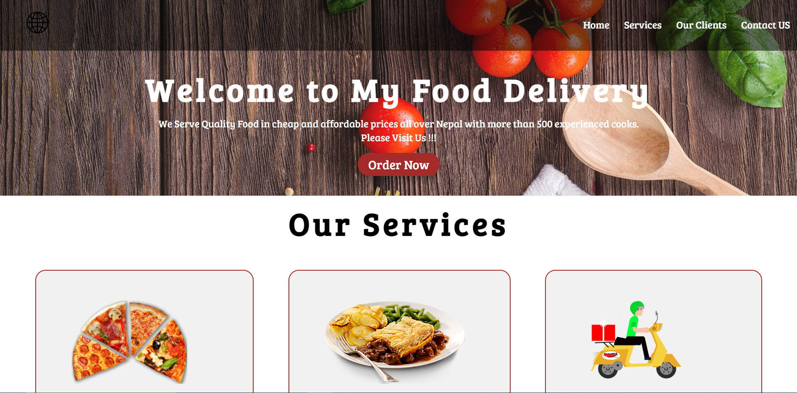
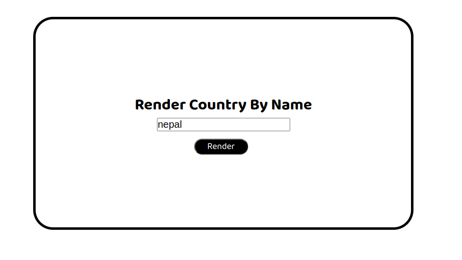

Hi,
I'am Prasanga
Web Developer

About
I'am Prasanga
I am currently a Student at IIMS College Studying Computer Science. At the same time, I am Learning HTML, CSS and JavaScript to become a Full-Stack Web Developer.
Here are some technologies I have Worked with:
Here are some technologies I have Worked with:
- HTML & CSS
- JavaScript
- Java
Projects
- Food delivery Website

- Guess The Number
- Forkify
